Code and reproduction instructions: github.com/maxtlee/GaussianSplatting.
A 2D Gaussian is a center μ, a covariance Σ, a color c, and an opacity α. Rather than optimize the four entries of Σ, it is built from a per-axis scale S = diag(sx, sy) and a rotation R(θ), Σ = R S ST RT, which is symmetric positive semi-definite by construction. The weight at a pixel is w(x) = exp(−½ (x−μ)TΣ−1(x−μ)) and the pixel alpha is opacity · w. The 2×2 inverse is computed analytically; the determinant is clamped away from zero for numerical safety. Unit tests check symmetry, PSD-ness (eigenvalues non-negative), axis-aligned correctness, and rotation invariance.
Gaussians are composited front to back, C = ∑i ciαiTi, Ti = ∏j<i(1−αj), over a black background with straight RGB. Instead of a Python loop over Gaussians, the exclusive transmittance is the prefix product of (1−α) along the sorted axis (one cumprod) and the color sum is one matmul, so the whole composite is vectorized and differentiable. A test compares the vectorized result against an explicit per-Gaussian loop, and another checks a hand-computed two-Gaussian composite.
Each target is fit independently: Adam at 1e-2 for 2000 steps, scales in log space, colors and opacities through a sigmoid, from the prescribed spread-out initialization. The reported PSNR is −10 log10 of the exact full-image MSE. Details and the quality-vs-count study are in P5.
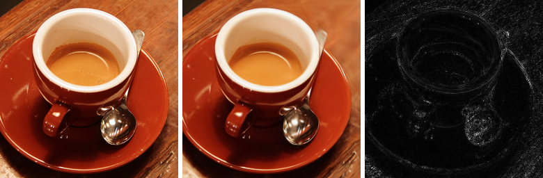
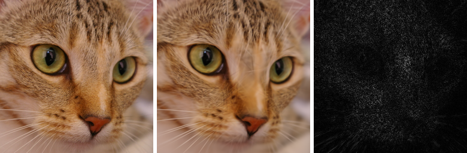
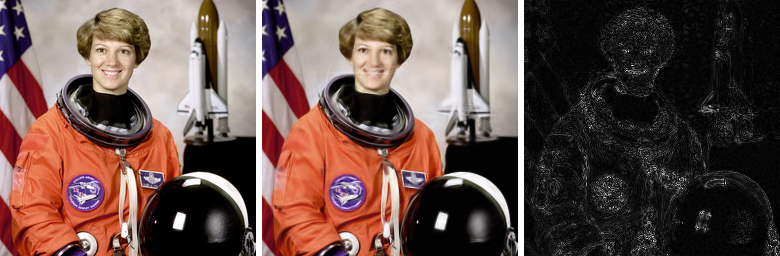
Score, split/clone, pruning. Every 200 steps each Gaussian is scored by the mean magnitude of the loss gradient with respect to its position accumulated since the previous pass, gi = (1/M) ∑k ‖∇μiLk‖2. I densify the top 25% by score (a fraction rather than the reference 2e-4 threshold, because the absolute gradient scale depends on the coordinate system and a fixed threshold densified almost nothing at pixel scale). An under-fit Gaussian whose larger axis is at most 2% of the image width is cloned in place; otherwise it is split into two children offset ± half the major axis, with scales divided by 1.6. Gaussians with opacity below 0.005 are pruned, and the total is capped at the budget. Densification runs until 80% of the steps so the tail refines the grown set; the Adam moments of survivors are carried over and new Gaussians start from zero.
Result and head-to-head. On coffee, growing 256 → 1024 reaches 30.74 dB versus 28.42 dB for a plain fixed fit at the same 1024 Gaussians. Densification wins at equal count on all three targets (coffee +2.32, cat +0.65, astronaut +0.34 dB).
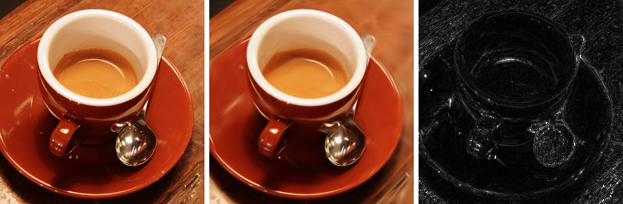
| target | N = 256 | N = 1024 | N = 4096 | densified (N = 1024) |
|---|---|---|---|---|
| coffee | 24.64 | 28.42 | 33.33 | 30.74 |
| astronaut | 19.98 | 24.20 | 31.09 | 24.54 |
| cat | 26.06 | 28.97 | 33.99 | 29.62 |
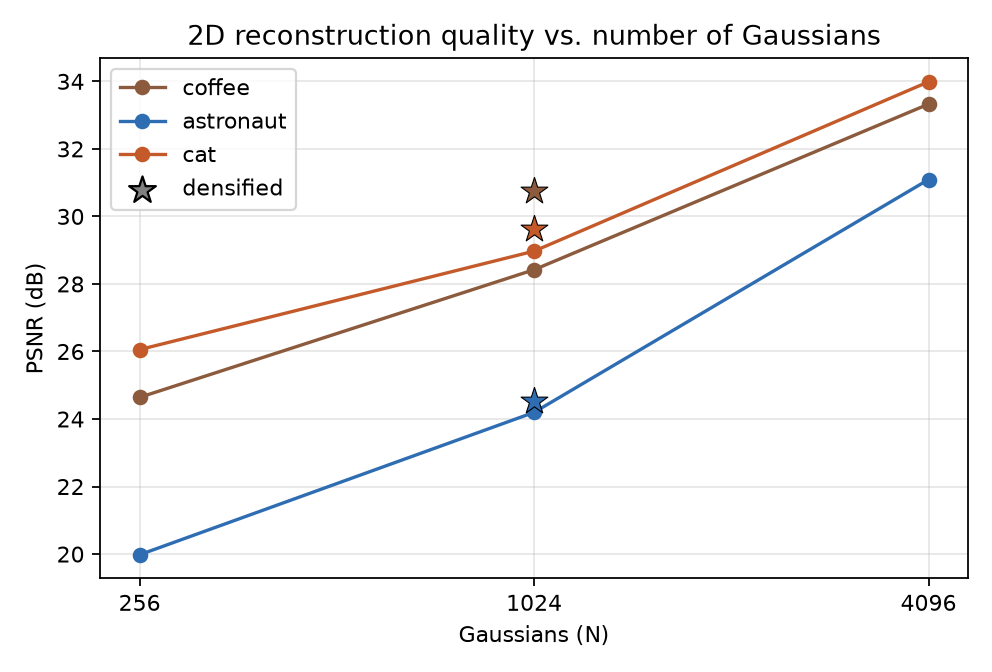
Which images need more Gaussians. astronaut needs the most: it is worst at N = 256 (19.98 dB) and gains 11.1 dB by N = 4096. It mixes smooth regions with sharp, high-contrast structure (helmet rim, white suit on a dark background, the flag), and sharp edges are what smooth blobs fit worst. coffee is dominated by large smooth regions, so it starts higher (24.64 dB) and still climbs to 33.33 dB as capacity captures the rim and reflections. cat is almost all high-frequency fur yet scores highest at low N (26.06 dB) and reaches 33.99 dB: dense texture has a small per-pixel amplitude around a dominant local color, so blobs match its local mean well even when the detail blurs — MSE tolerates that far more than a sharp edge. The lesson is that structure (edges, contrast) matters alongside frequency content: the image that needs the most Gaussians here is the one with the sharpest structure, not the one with the most high-frequency energy.
The 3D covariance is built the same way, one dimension up, with a rotation from a unit quaternion (normalized first). Projection sends the mean through the pinhole camera and the covariance through the projection Jacobian at the mean: μcam = Rwcμ + t, Σ′ = J Σcam JT with J the 2×3 derivative of the pixel projection, and depth = zc. Gaussians behind the camera are given zero opacity. Tests check the quaternion-to-rotation matrix is orthonormal with determinant 1, that covariance is PSD and axis-aligned when the rotation is identity, that a point on the optical axis projects to the principal point, and that an offset shrinks toward the center with depth.
Each step samples one training camera, projects all Gaussians, sorts by camera-space depth, composites, and takes an MSE loss. The run below uses N = 4000, 1500 steps, Adam at 1e-2, initialized as a coarse random cloud in a [-1.5, 1.5]3 box with scale 0.08 and identity rotation. The mean training PSNR is 23.60 dB (held-out 16.51 dB).
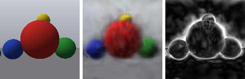
Running 4000 steps and evaluating train and held-out PSNR every 250 steps shows training PSNR climbing from 13.2 dB to 25.8 dB while held-out PSNR rises to only about 16.5 dB in the first few hundred steps and then stops improving (it even dips slightly). More steps alone do not close the gap: the cloud fits the training views without learning the scene.
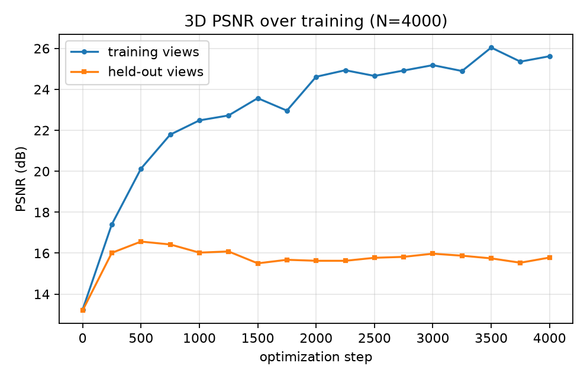
Positions and scales are 3D (mu and log_s of shape (N, 3)); rotation is a quaternion (N, 4) that clone/split simply copy; the size threshold is in world units instead of pixels; the position-gradient score is accumulated over the randomly sampled training cameras between passes; and pruning the sub-threshold-opacity primitives is what clears floaters. The score, clone-vs-split rule, split factor, budget cap, and Adam-moment bookkeeping are all unchanged.
| model | Gaussians | training PSNR | held-out PSNR |
|---|---|---|---|
| fixed | 2500 | 23.24 | 16.77 |
| densified | 2488 | 23.99 | 16.20 |
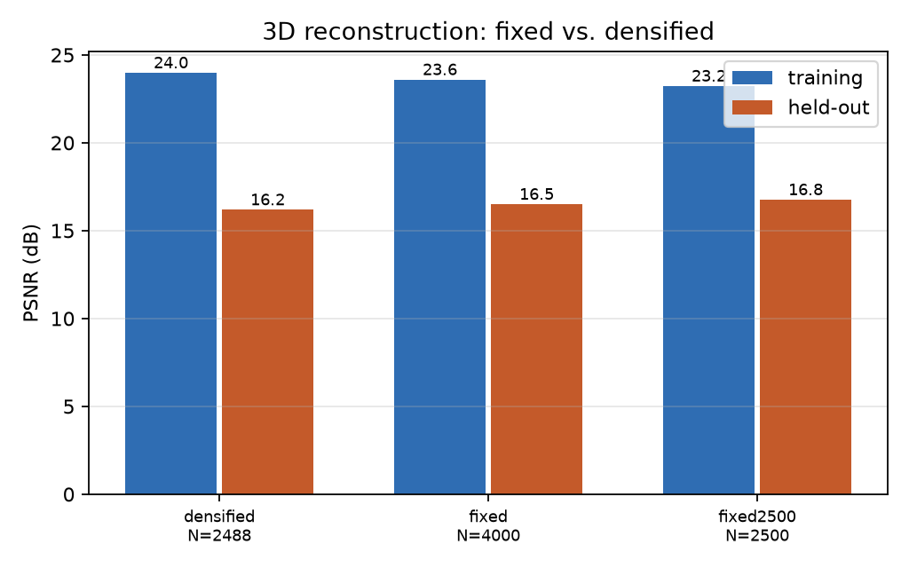
The densified cloud reaches a higher training PSNR but a lower held-out PSNR than the fixed fit at the same count. The extra primitives improve the training views, floaters included, and do not generalize. I report the negative result rather than claim floater reduction: with a per-camera global depth sort and 1500 steps, densification adds training fit without reducing the held-out fog.
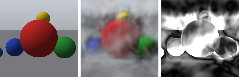
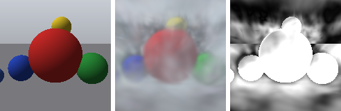
Held-out vs training. Held-out PSNR is 16.5 dB against 23.6 dB training — a large gap, so a substantial part of the fit is memorization.
Novel view. A 24-frame orbit at 20° elevation (a viewpoint family the optimizer never saw) is in assets/orbit_fixed.mp4; six frames:
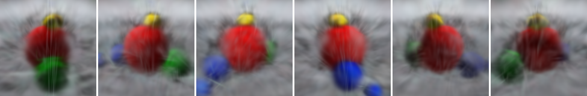
Where it breaks. Sphere silhouettes are soft, thin contacts between spheres merge, and the wall/floor fog drifts with the camera. The causes are the simplifications of this pipeline: a random (not SfM) initialization, a single global depth order rather than a per-pixel one, and view-independent color.
My GTX 1050 Ti has 4 GB of VRAM so it cannot hold the full (pixels × Gaussians) weight tensor, so rendering is done in horizontal bands with a local-support cutoff. This must be a pure memory optimization. Retraining the same model under different band heights gives:
| band (rows) | 2D (coffee, N=1024) | 3D train (spheres, N=1000) | 3D held-out |
|---|---|---|---|
| 8 | 23.1141 | 18.2650 | 16.3355 |
| 16 | 23.1130 | 18.2655 | 16.3351 |
| 32 | 23.1154 | 18.2657 | 16.3345 |
| 64 | 23.1156 | 18.2658 | 16.3347 |
| whole image | out of memory | ||
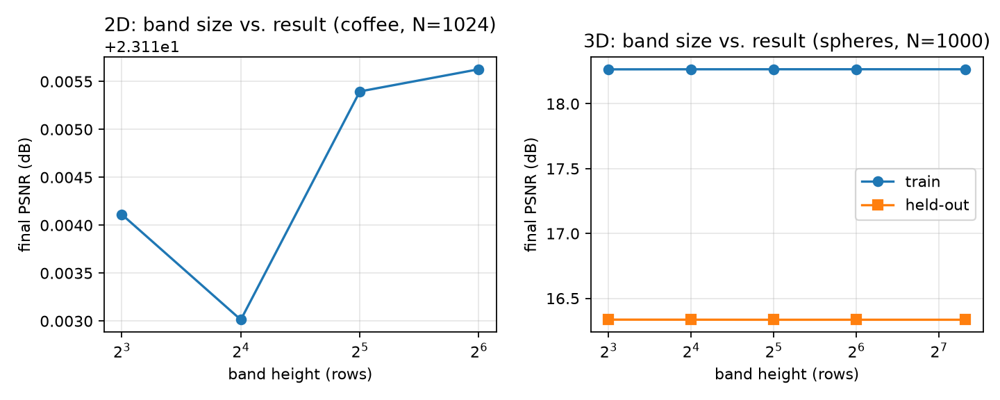
The spread is floating-point noise (0.003 dB in 2D, 0.001 dB in 3D), and the whole-image 2D configuration does not fit in memory — which is exactly why the bands exist. Disabling the 3.5σ support cutoff entirely changes the held-out PSNR by 0.0002 dB. The batching therefore does not affect the end result.
320 Eiffel Tower photos were downloaded from Wikimedia Commons (freely licensed, credited in eiffel/CREDITS.md). COLMAP registered 215 of them (11,621 sparse points). A 3D-circle RANSAC over the camera centers was not confident (the views are not a clean ring), so a robust distance filter kept 196 views (172 train / 24 held-out). The photos span day, blue hour, night, clouds, and different cameras.
Lighting / weather compensation, before and during training. Before training, every image is affine-corrected per channel to match the dataset's median robust mean and standard deviation (a shared reference exposure and white balance). During training, a per-image per-channel gain and bias is optimized jointly with the Gaussians and applied to the render before the loss, so the Gaussians learn one canonical color while each image absorbs its own exposure. A Huber loss downweights mismatched pixels. Gaussians initialize at the SfM points.
| compensation | train PSNR | held-out PSNR |
|---|---|---|
| none | 13.44 | 11.64 |
| before training | 15.29 | 14.47 |
| during training | 13.37 | 11.89 |
| both | 15.03 | 14.22 |
| Gaussians (both) | 3000 | 6000 | 12000 |
|---|---|---|---|
| train PSNR | 15.25 | 15.03 | 14.77 |
| held-out PSNR | 14.33 | 14.22 | 14.42 |
Pre-normalization gives the largest gain (+2.8 dB held-out); correcting during training alone adds little, and "both" is marginally worse than "pre" (the per-image parameters can absorb training idiosyncrasies at this budget). Gaussian count barely changes the result between 3000 and 12000, so the bottleneck is the reconstruction rather than capacity.
Limitation. Absolute quality is low — the render is a faint silhouette, not a crisp tower. SfM on a repetitive, symmetric landmark photographed across night and day is hard; 215 views with noisy sparse points over a 40-unit scene. A longer run (12k Gaussians, 3000 steps) reached 15.23 / 14.26 dB — essentially unchanged from 1200 steps and from the 3000- and 6000-Gaussian runs, confirming the reconstruction is the bottleneck rather than the training budget. The value here is the end-to-end real-world pipeline and the compensation study.
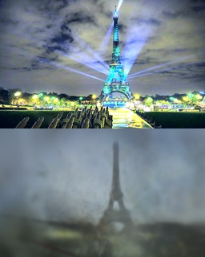
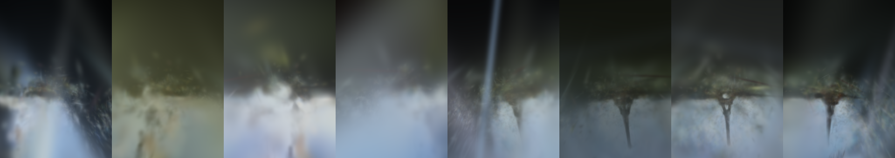